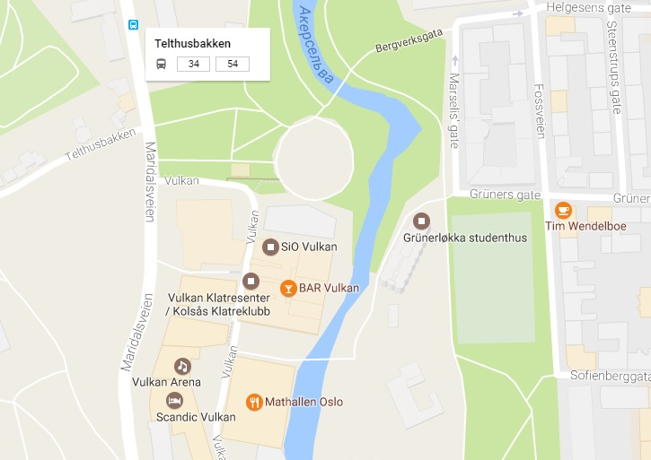

Ruter
Ruter er et felles administrasjonsselskap for kollektivtrafikken i Oslo og Akershus.
RuterBillett-app
Last ned RuterBillett-appen på mobilen og kjøp billett hvor og når som helst. Dette er den enkleste måten å kjøpe billett på.
Slik bruker du appen:
Reisekort
Reisekort er et plastkort du fyller med billetter eller reisepenger.
Informasjon om bilett og straff
Alle billetter kan brukes på Ruters T-bane, trikker, busser og båter, og på NSBs tog i Oslo og Akershus. Det er mulighet å kjøpe enkeltbilett, 24-timer bilett, 7-dager, 30-dager, 365-dager bilett.
Studenter under 30 år, lærlinger og lærekandidater kan få 40% rabatt på 30-dagersbilletten. Det samme gjelder elever på videregående skole som har fylt 20 år. Studentrabatten gjelder bare på 30-dagersbilletten, ikke enkeltbillett eller andre periodebilletter.
Kjøp alltid billett før du går om bord eller inn i kontrollsonen på T-banestasjonen. Du kan gå om bord eller inn i kontrollsonen når billetten har status «Bekreftet - Påstigning» og nedtellingen har startet.Du kan bytte til andre transportmidler så lenge nedtellingen varer.
Billettkontroll
Du er selv ansvarlig for å ha gyldig billett når du reiser. Uten gyldig billett vil du få gebyr i en billettkontroll. Størrelsen på gebyret, eller pengebeløpet du da må betale, er fastsatt av Samferdselsdepartementet.
Kr 1150, eller kr 950 hvis du betaler på stedet.
Informasjon om nærmeste holdeplass
Campus Vulkan holder til Vulkan 19, 0178 Oslo
Nærmeste buss holdeplass er Telthusbakken, buss #34, #54.
Nærmeste T-bane holdeplass er Grønland og Jernbanetorget
